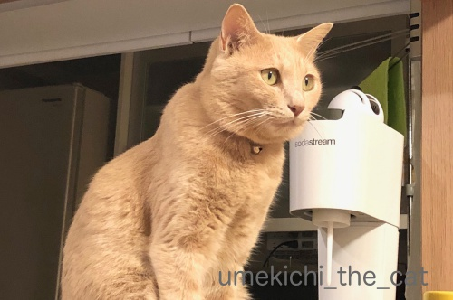
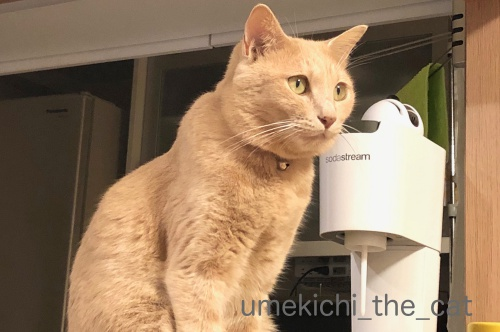

梅吉パラパラとネコメンタリー [梅吉]
私が普段PCを置いて使っているテーブルの斜め上方、梅吉のお気に入りの「巣」があります。
ちょうど寝顔がよく見える角度なのでついつい写真を撮ってしまうんですよねw
毎日毎日増え続ける同じような構図の代わり映えしない写真。
かわいい＆面白い表情はたくさんあるのですが
ブログに使うにはストーリー性に乏しくてボツに。
そのボツを集めてパラパラ漫画風につなげて見みました。
写真の角度、明るさなどは揃えていないので見難いかもしれません。
お許しくださいませm(_ _)m
（1分26秒あります）
最初はタオルだけだったのがカゴになりやがてガゴの中のタオルが変わって行くところに
時の移ろいが感じられるのではないでしょうか＾＾
写真は古い順からスタートしているので梅吉の成長もわかる、かな？
（１歳過ぎた頃からスタートなのであまり大きな変化はみられないのですけど）

あの「世界ネコ歩き」にも興味を示さず（猫に関しては）見るのは自分が写っている動画だけ
の梅吉が初めてテレビに映る他のにゃんこに興味を示しました！
そのお相手は・・・・・
（20秒です）
もみじさん17才。
ぴっちぴちのセブンティーンやで、って飼い主の村山さんはおっしゃっていました＾＾
これは先日放送されたネコメンタリー 猫も、杓子もの一コマ。
余命を宣告されたもみじさんと作家の村山由佳さんの穏やかな最後の日々の映像。
もみじさんの語りとして心に残るセリフがあったので引用します。
男性は「とおちゃん」に置き換えてくださいね。
『なあ、かあちゃん、いっつもうちにきくやん？
あんた、かあちゃんとこきて幸せやった？て
うちには幸せなんてようわからん
せやけどこれだけはわかるで
かあちゃんは、この世でいちばんうちのことが好き
うちは、この世でいちばんかあちゃんのことが好き
なあ、それでええやろ？
相思相愛や・・・』
もみじさん、2018年春、永眠しています。
 ↑ガブッと一押し↑
↑ガブッと一押し↑
村山由佳さん、パートナーのおとーちゃん、もみじさんの日々に涙涙でした。
（え？私だけ？）
が、涙しながらも素敵なおうちだなーとしっかり観察もしていましたよw
お庭なんて結構ジャングルなんですが植物の配置、植えられてるものがとっても良い感じ。
一見野放図に見えて計算され尽くした感じもします。
（画像はすべてこちらからお借りしました。）
このおうちはもともとスタジオ？か何かで一般住宅ではなかったようです。
家の中はミニマリストの人が見たら目を剥きそうなくらい物がたくさんあって
正直ごちゃごちゃしてるんですがそれがまたいい味出して素敵なんです。
あちこちから集めたと思われるアンティーク雑貨がそこここにあって
ちょっと探検したくなっちゃうおうちです。
たくさんの物を一箇所に集めてそれを素敵に演出するセンスのある村山さん
実は作品を読んだことがありません。
作風が時代によってかなり違うようなので各年代のものを
それぞれ何冊か読んで見たいなと思っています。
ちょうど寝顔がよく見える角度なのでついつい写真を撮ってしまうんですよねw
毎日毎日増え続ける同じような構図の代わり映えしない写真。
かわいい＆面白い表情はたくさんあるのですが
ブログに使うにはストーリー性に乏しくてボツに。
そのボツを集めてパラパラ漫画風につなげて見みました。
写真の角度、明るさなどは揃えていないので見難いかもしれません。
お許しくださいませm(_ _)m
（1分26秒あります）
最初はタオルだけだったのがカゴになりやがてガゴの中のタオルが変わって行くところに
時の移ろいが感じられるのではないでしょうか＾＾
写真は古い順からスタートしているので梅吉の成長もわかる、かな？
（１歳過ぎた頃からスタートなのであまり大きな変化はみられないのですけど）

あの「世界ネコ歩き」にも興味を示さず（猫に関しては）見るのは自分が写っている動画だけ
の梅吉が初めてテレビに映る他のにゃんこに興味を示しました！
そのお相手は・・・・・
（20秒です）
もみじさん17才。
ぴっちぴちのセブンティーンやで、って飼い主の村山さんはおっしゃっていました＾＾
これは先日放送されたネコメンタリー 猫も、杓子もの一コマ。
余命を宣告されたもみじさんと作家の村山由佳さんの穏やかな最後の日々の映像。
もみじさんの語りとして心に残るセリフがあったので引用します。
男性は「とおちゃん」に置き換えてくださいね。
『なあ、かあちゃん、いっつもうちにきくやん？
あんた、かあちゃんとこきて幸せやった？て
うちには幸せなんてようわからん
せやけどこれだけはわかるで
かあちゃんは、この世でいちばんうちのことが好き
うちは、この世でいちばんかあちゃんのことが好き
なあ、それでええやろ？
相思相愛や・・・』
もみじさん、2018年春、永眠しています。
村山由佳さん、パートナーのおとーちゃん、もみじさんの日々に涙涙でした。
（え？私だけ？）
が、涙しながらも素敵なおうちだなーとしっかり観察もしていましたよw
お庭なんて結構ジャングルなんですが植物の配置、植えられてるものがとっても良い感じ。
一見野放図に見えて計算され尽くした感じもします。
（画像はすべてこちらからお借りしました。）
このおうちはもともとスタジオ？か何かで一般住宅ではなかったようです。
家の中はミニマリストの人が見たら目を剥きそうなくらい物がたくさんあって
正直ごちゃごちゃしてるんですがそれがまたいい味出して素敵なんです。
あちこちから集めたと思われるアンティーク雑貨がそこここにあって
ちょっと探検したくなっちゃうおうちです。
たくさんの物を一箇所に集めてそれを素敵に演出するセンスのある村山さん
実は作品を読んだことがありません。
作風が時代によってかなり違うようなので各年代のものを
それぞれ何冊か読んで見たいなと思っています。

カフェオレ色の梅吉

梅吉 2023年8月10日 永眠


梅吉と出会った譲渡会

犬猫の理由なき殺処分ゼロ
妄想広告
UMEKICHI 光

爆発的に早い！
時々攻撃的！
Thanks to Mr.Boss365
爆発的に早い！
時々攻撃的！
Thanks to Mr.Boss365

梅吉さん、じっくり見させていただきました^^
by ニコニコファイト (2018-09-13 06:47)
パラパラって、踊りの？かと思っちゃったよ（ﾟ□ﾟ）
by 英ちゃん (2018-09-13 06:57)
枚数多過ぎ～、
もうちょっとゆっくり見たかったなぁ＾＾；
by ぽちの輔 (2018-09-13 07:14)
パラパラ動画♪
面白いですねぇ～(#^.^#)
ところどころ足がピーン（笑
日々、同じような写真を撮りまくっております(;^_^A
デジャブ？？と思うような写真が多くて
使い回ししても分からないんじゃないかと
思うくらいなのですが、日々パシャパシャと
しちゃいます♪
by きぃ (2018-09-13 07:37)
梅吉様、百面相ですね(〃'∇'〃)
天井に隠しカメラを付けて観察
したほしいです(^_^;) TVを
じっと見つめてて、可愛い(^^)
by middrinn (2018-09-13 08:33)
おはようございます。
梅吉君のスライドショー最高です！！
細目？閉じているのか？曖昧さが最高！！どっちクイズかな？
YouTubeから脱出・帰還もお見事な編集です！！
梅吉君！！モニター画面を良い姿勢で視聴してますね？監視態勢です！！
再編集のネコメンタリー小生も視聴しました。
日本 vs 韓国？を視聴しながらザッピング・・・状態でした。
ナレーションも良かった。ブラッシングする緑に囲まれたベランダが欲しいです。
ちぃさん宅は、緑があれば実現可能ですね！！
軽井沢の自宅も素敵で、印税御殿かな？と不謹慎な感じ持っちゃいました。
もみじさん！！悲しいですが・・・幸せな一生だったと思います。
by Boss365 (2018-09-13 10:11)
ネコメンタリー 猫も 杓子も
あー、これ良い番組なのよねえ。
村山由佳さんの回は私も泣いた泣いた(;;
会社のPCで、いま何故か動画の箇所が表示されないので、あとで見てみるね^^
by リュカ (2018-09-13 10:24)
リロードしたら見えた！(笑)
ぱらぱら漫画風おもしろいな。ブログではボツになっちゃう写真たくさんあるから、このアイデアいただき！ｗ
by リュカ (2018-09-13 10:25)
梅吉さんて寝てると笑って見えますよね。毎日楽しくて安心して寝てるんだな~と思いました。梅吉さんがおばーさん三毛猫が好きなのは新発見ですね。どの辺がお気に召したのでしょう。
by zombiekong (2018-09-13 10:58)
梅吉さん、眠ると目がす～っと筆で描いたような細い線になるんですよね♪
布だったりカゴだったり箱だったり、どれもリラックスして気持ちよさそうです^^
かなりの勢いで飛び乗るところありますが、カゴは固定されてます？
ウチのは敷いてある布を噛んで引きずるので高いところには置けません(-_-;)
もみじさん、見ました。
ステキなお家、ステキな暮らし、ウチも相思相愛だったいいな・・・。
ネコメンタリーシリーズはじわ～んと胸にしみますね。
by ゆきち (2018-09-13 12:52)
超大作動画？拝見しました！
時の経過もあるのですね。
それにしても、すごい枚数ー(^_^;)
前回記事に貰ったコメントで、記事一本書きました！
by よーちゃん (2018-09-13 13:26)
梅パラ♪素敵でした＾＾。
うちのこも同じ感じで、同じように同じ場所で…ｗ
毎日同じように見えて、それが幸せなんですよね＾＾＠
忘れてはならないコトを思い出します＾＾
by 猫毬 (2018-09-13 14:01)
梅吉さん、パラパラですね!
検査も無事終了して、これから昼ご飯です(^^)
by ma2ma2 (2018-09-13 14:19)
梅吉さんのパラパラ、つい何度も観てしまいました。
今度「しょうちゃん」でもやってみようかな(^_^;)
by kou (2018-09-13 20:02)
梅吉さんの貴重な成長写真ですね( ^ω^ )
いろんな寝顔が見られて、この席は良いかも♪( ´▽｀)
確かに「うちの子になって良かった」って思ってくれたら
嬉しいなぁって思いますが、それよりも
「相思相愛」って思ってくれてる方が嬉しいですねぇ=(^.^)=
うちのニャンズもきっとかみさんとは
『相思相愛』って言うんだろうなぁ(⌒-⌒; )
by ニッキー (2018-09-13 21:39)
うちの猫写真なんてもっと変わり映えしないのに（しかもピンボケ）、堂々と載せていますー。^^;
梅吉さんが目を細めて寛ぐ姿、和みますね。
ええ、もみじさん17歳？
うちのと同い年だ。。。
by yes_hama (2018-09-13 21:46)
梅吉パラパラ♪梅吉くんの可愛らしさはもちろんだけど
ちぃさんの梅吉くんへの優しいまなざし。愛情が伝わってきたよ(*^-^*)
by emi (2018-09-13 22:43)
梅吉さんの目を閉じた表情が穏やかです。
ボツにするのはもったいないです。集めると大作ですね(^^)
猫さんと相思相愛。そんな幸せは他にはないですね。
by riverwalk (2018-09-13 22:44)
人には同じ様に見える写真も、飼い主にはぜーんぶ違った顔だから、
つい沢山撮ってしまいますよね～(*´ω｀*)
パラパラ写真、面白いです♪
私もこの頃、猫ものの物語を観ると
涙腺崩壊です( ´艸｀)
by マーヤ (2018-09-13 23:52)
写真！分かります。
わたしも常に手が届くところにカメラ置いてます^^;
梅さまも、ちぃさんが見えるので安心なのでしょうね。
パラパラ・・・タイトルを見て
「梅さまついに踊っちゃった・・・？」と勘違いしました(｡-_-｡)
素敵なお宅。
改造して、好みに仕上げる気力と労力（実行力）はすばらしいですね。
絶対、できない。どんなにヒマでも^^;
by Ja-Kou66 (2018-09-14 00:35)
目をあいてる顔もいいけど、目をつむった時の顔もいいなぁ線目だなぁ。でもやっぱ梅吉くんは白目かなぁ(*^^*)
by palpal (2018-09-14 15:51)
梅吉さんパラパラ、可愛いです～。
ご機嫌でここかたずうっと見下ろしているのね～ときどき目を細めているとお守りのよう＾＾
ネコメンタリー、見ましたよ。
ぴっちぴちのセブンティーン、さすがの魅惑？
なにか感じたのかしらね‥
ほんとに素敵なお宅ですよね～＾＾
by sana (2018-09-14 18:52)
梅吉さんがリラックスしている姿をみると、こちらまで幸せになってきます。
寝顔も色々で楽しめました。
パラパラ動画は面白い企画でした。
ちぃさんに感謝の花マルを描きましょう
by kiki (2018-09-14 21:56)
ほほっ(^m^) なんか、神棚っぽい♪
神棚に、梅吉さんの、ふくふく顔♡
「福、招きまっせ」って、言うたはるね(^.^)
by のらん (2018-09-15 10:51)
パラパラ動画、面白かった。
時々、日光の眠り猫さんみたいになってた~。
他のニャンコ見いる動画も
じいーっと見ていて最後に耳が動くのが
かわいかったです。
by ふにゃいの (2018-09-15 16:44)
ネコメンタリー好きです
観ましたよ～っ
軽井沢の家と庭
はぁーっ♪
ステキ過ぎですやん
関西弁のもみじの言葉
自分（お父ちゃん）の餌より
うちのご飯を先にしよる
笑いました
そして最後は涙でしたわ…
by ヨッシー (2018-09-15 19:36)
愛がぎっしり詰まったパラパラなのです！
by Ginger (2018-09-16 16:40)
ニコニコファイトさん＞
じっくり鑑賞、ありがとうございまーす＾＾
英ちゃんさん＞
ありましたね！パラパラ＾＾
でもいまだにどんなものだったかよく知りませんwww
ぽちの輔さん＞
ありゃ〜多すぎでしたか；；
枚数、速度どのくらいが良いのか分からなくって
てんこ盛りにしちゃいましたwww
きぃさん＞
足ピーン、アクセントになってますよね(*>艸<)
私の写真ライブラリも梅吉ばっかり相当溜まってますが
きぃさんのライブラリもパンパンそうですねw
使い回し、おそらく分からないんじゃないかと思いますが（笑）
手を抜ぬいて「Leaちゃんごめん！梅吉ごめん！！」って
私たち、後ですごく後悔しそうですよ(｡-_-｡)
middrinnさん＞
Webカメラ、良いですよねー！
付けたいと思う反面、
付けて留守中に梅吉が寂しそうにしているのを見てしまったら
どこにも出かけられなくなりそうで踏み切れませんwww
Boss365さん＞
では！白目の画像は何枚あったでしょう？なんて ( ´艸｀)
いろんな顔もあったほうが楽しいよね、
と変顔も放り込んで編集しました＾＾
白目は梅吉のキメ顔でもありますしw
ベランダでのブラッシング、我が家ではもちろん出来ますが
梅吉はベランダに出ると（いつもより更に）ハイテンションなので
ブラッシングプロレスになってしまいそうですwww
印税御殿、うらやましい！才能があるってうらやましい！！
と私も思っちゃいました (｡-_-｡)
リュカさん＞
動物病院での診察室の場面から車で家に帰るまでの場面
しゃくりあげながら見てました・・・
こういう場面って自分に当てはめて見ちゃうんですよね。
そうするともう涙が止まらない。。。
ぱらぱら漫画風は、定点観測したら面白いよねって
２年前から意識して写真を撮り始めたよ＾＾
意識して撮ってなくても
リュカさんは写真のストック膨大にありそうだからすぐ出来そう！
ぜひぜひぱらぱら作ってみてください！！
zombiekongさん＞
寝てる時、福々しい顔になる梅吉です。
なんかアホな夢を見てそうですが幸せそうなので良しとしまーす＾＾
梅吉はおかーさんを含めどうやら年上好みなようですよ。
おばちゃんキラーでもあるかも( ´艸｀)
ゆきちさん＞
梅吉の目を閉じた顔、飛鳥時代の弥勒菩薩っぽいな、なんて思ってます＾＾
そう思うとますますありがたや〜と猫様度がアップですw
梅吉のカゴは固定してませんでした。。。
確かに勢いついてずれたりしそうです。
何か対策を考えなければ！ご指摘ありがとうございます！！
我が家のにゃんこと相思相愛、本当にそうありたいですね＾＾
こてつくんの遊び好き、汲み取れたのはきっと猫父母さんだから。
相思相愛間違いなしですよーＯ(≧▽≦)Ｏ
よーちゃん＞
PC内の写真ライブラリーの枚数はさらに膨大で・・・
夫婦二人で撮った写真をクラウドにあげているのですが
容量がすごいのでストレージ追加しましたwww
セレンゲティ早速調べていただいてありがとうございます＾＾
「セレンゲティ 夕暮れ」でググると（画像）よーちゃんの写真もヒットしますね！
ほんまもんのセレンゲティの写真に
何の違和感もなく溶け込んでてすごいです(^_－)☆
猫毬さん＞
梅パラ、ありがとうございまーす＾＾
年取ってくると（笑）毎日同じこと、いいな、と思えてきます。
にゃんことの毎日も同じですねー。
一緒の時間、大切に過ごしていきたいです！
ma2ma2さん＞
たくさんある写真を選んでパラパラしてみました＾＾
思ったより早くの退院、よかったですね！！
kouさん＞
しょうちゃんだと寝そべってなでなでされている写真かな＾＾
それも楽しそうです！！
ぜひぜひーＯ(≧▽≦)Ｏ
ニッキーさん＞
梅吉の寝顔も良い角度で見えてカメラも手元にある、
写真を撮らずにはいられないシチュエーションですw
同じ写真ばっかりだなって思ったこともあったのですが
ならばそれを利用しよう！と意識して写真を撮り始めました＾＾
ニッキーさんとにゃんずさんの『相思相愛』・・・
確かに、比べられる相手がゴッドマザー様だと分が悪過ぎますねw
ここは、ひとつ、『なかなかの下僕だ』と
にゃんずさんに思っていただけるよう頑張って下さいませm(_ _)m
yes_hamaさん＞
ピンボケでも白目でも、飼い主が可愛い！と思う写真なら
それがベストショットですよね(^_－)☆
アズ氏17歳、まだまだお元気でいらっしゃいます！
今年のハロウィンも楽しみでーす＾＾
emiさん＞
あら、バレバレだわ〜。
「かわいいねぇ〜。いい顔だねぇ〜。」なんて言いながら写真撮ってます＾＾
あの岩合さんも「飼い主さんの撮る写真にはかないません」っておしゃってます。
みなさんのブログの中の愛猫＆愛犬のお写真の表情を拝見して
なるほど！って頷いています。
みんな最高に可愛く写っているもの＾＾
riverwalkさん＞
目を閉じると仏の梅吉顔になりまーす！
ガブガブしている時の邪鬼みたいな表情が嘘のようですwww
猫さんと相思相愛、ユキちゃんとは間違いなくそうですね＾＾
マーヤさん＞
そうなのー！飼い主から見ると同じ写真などない、ですよね＾＾
首の角度、視線の向け方で表情が違っているので
どの写真も可愛くて困っちゃいます！
猫、動物もの・・・どれも自分と梅吉に当て嵌めてしまって
どうしても客観的に見ることができません・・・
Ja-Kou66さん＞
手の届くところにカメラ、家の中でも移動するときはスマホ、手放せませんw
パラパラ、ありましたよね！
あの頃はもう良い大人だったので
今だにあのブームは何だったのかよくわかっていませんwww
お家のあれこれ、わかります！
あれこれ手がけてみたい願望はあるのですが
私の場合途中でめんどくさい、と思うこと間違いなしです(⌒_⌒;
palpalさん＞
梅吉の線目、仏様のようでしょ＾＾
ガブガブしている顔や白目の顔と落差が激し過ぎwww
sanaさん＞
このカゴには本気で眠いときに入るのですが
寝入るまでの表情が何とも言えずに可愛いんですよね〜＾＾
いつまでのそのお顔を眺めていたいのですが
やがてまるっとカゴの中に姿が消えてしまうのが残念ですw
ぴっちぴちのもみじさん、関西弁にシンパシーを感じた、とか！？
kikiさん＞
梅吉のリラックス顔、
ガブガブしている時とは別にゃんのようなんですよ＾＾
リラックス姿は見ていて本当に癒されます。
ので！ついつい撮影大会です！！
花マルありがとうございままーすＯ(≧▽≦)Ｏ
のらんさん＞
確かに！我が家の「神」ですからねー＾＾
常時はふくふくしい福の神ですが
荒ぶることも多い手応えのある神様です( ´艸｀)
ふにゃいのさん＞
ほんとうだ！目のしゅ〜っとした感じが眠り猫ですね＾＾
くわっと目覚める事もあるので日光のにゃんこより見応えがある、
かもです( ´艸｀)
もみじさんのことは本当に真剣に見てました！
耳が動いても視線はテレビに釘付けでしたよー＾＾
ヨッシーさん＞
本当に素敵なお家でしたよね＾＾
ひろーいお家、誰が掃除するんでしょう・・・と
極めて小市民的な心配もしちゃいましたw
村山さんのパートナーのお父ちゃん下僕も良い仕事してましたね！
ブラッシングににゃんこのご飯の準備に病院の送り迎え。
もみじさんもおとーちゃんも幸せな時間を
一緒に過ごせたのでしょうね・・・
Gingerさん＞
愛とたくさんの写真を多すぎるくらい盛り込みました＾＾
by ちぃ (2018-09-17 20:06)
パラパラ梅吉さん、新鮮！(^^)/
いつも拝見する梅吉さんは、ちょっぴり困った風のクリクリお目目か、
国芳さん風の白目むき出が印象的。
そのどれとも違う、穏やかな糸目の寝姿が、いと愛くるしい♡
色変わりするブランケットも愛を感じます～。
そして、ネコメンタリー♡ もみじさーーーん♡♡
大好きな番組で、大好きな作家さん！
ドラマに出てくるようなお家に、猫5匹と暮らしてるとあって、
数年前からツイッターで拝見していました。
なので、リアルタイムのもみじさんの経過はよく覚えてます（泣）
テーマで出てくる「いつか、同じ場所」。
哀しく寂しいけれど、心穏やかになれる言葉です。
村山さんの作品は、おっしゃるとおり、時代によってかなり変わります。
そこも含めて、ぜひ楽しんでみてくださいませ～。
もみじさんも登場する、里山暮らしの猫作品もいいですよ(^^)
by morichan (2018-09-18 15:25)
morichanさん＞
国芳風wちょっと妖怪っぽい顔の時の梅吉、本当にそんな感じですよね( ´艸｀)
梅吉の前世は国芳家に出入りしていた！？なんて思ってますw
村山さんのツイッター、フォローされていたのですね・・・
もみじさん、相思相愛、いえ、自分の愛以上におかあちゃんに愛されて
（おとうちゃんにも）幸せな猫生だったことでしょう。
みなさんのところにいるにゃんこのみなにゃん、梅吉も
そういう猫生を送ってくれるといいな＾＾
村山さんには猫作品も？
そこから攻めて見まーす！！
by ちぃ (2018-09-20 22:44)